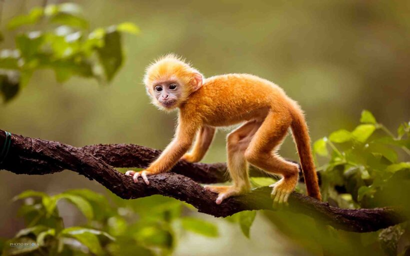

Khỉ là một những loài động vật 4 chân thuộc lớp thú, bộ linh trưởng. Khỉ có ba nhóm lớn, là khỉ Tân Thế giới, khỉ Cựu Thế giới, khỉ không đuôi (Ape). Có khoảng 264 loài khỉ đã bị tuyệt chủng. Một số loài giống khỉ không đuôi, như tinh tinh hay vượn thường được gọi là khỉ trong ngữ cảnh bình dân, tuy rằng các nhà sinh học không xếp chúng vào các loài khỉ. Tuy nhiên, không có một đặc điểm nào là duy nhất mà tất cả các loài khỉ đều có mà các loài khác không có.
